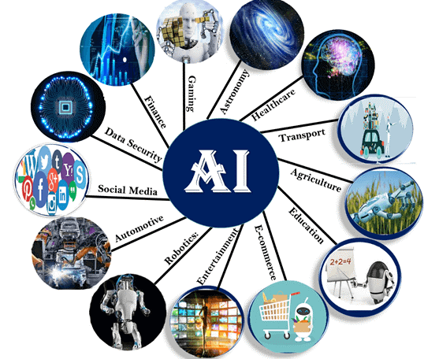
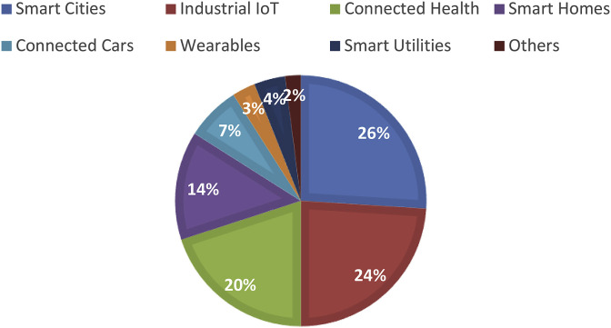

According to my 16 Personalities test, the teammates that I would like to work with are:
My project aims to build a COVID-19 Dashboard in HCM city using Tableau
and ArcGIS for this pandemic management. The local authority mainly uses
this dashboard to
Originating from China in the last of 2019, COVID-19 has significantly become a tremendous pandemic until the present time. According to Worldometers (2021), the daily infectious cases are around 400 000 to 700 000, while the death cases are about 10 000 - 15 000 per day this year. In Vietnam,Ho Chi Minh City has become a hotspot for this pandemic disease, with the total number of cases peak at 150 000 and the average case number per day is more than 4000.
The local authority follows these procedures to mitigate several impacts of thispandemic, including social distancing, contact tracing, and herd immunity. Therules hope to flatten the curve and avoid the hospital bein overwhelmed with new cases by doing these steps while waiting for the vaccine. However, the appearance of the Delta variant, which is easier to spread and causes several more illnesses in infectious people, seriously affects HCM city and thesurrounding areas. The local manager is struggling with the new variant and taking many steps to control and prevent this pandemic.
Therefore, I aim to create an effective tool to help the official quickly access data, obtain necessary information about the pademic. Moreover, this tool also supports them in making predictions for the COVID-19 trend at a specific time.By using this dashboard, they can make appropriate decisions and policies for each city area.
The graph will present this information relevant to the chosen time and location.
Finally, the map also displays the vaccination coverage for one or two doses for each district.
The susceptible-Infected-Recovered-Deceased (SIRD) (Figure 1) model effectively makes a forecast tab of the COVID-19 pademic trend in the coming time of each district and the whole city. SIRD is one of the crucial models used to analyze COVID-19 data based on four main classes: susceptible, infectious, recovered, and death. In addition, it needs three parameters for the calculation steps, including the rate of transmission, the rate of recovery, and the rate of mortality.
The result of the forecast tab mainly consists of charts predicting the number of infections, recoveries, and deaths. Each of the charts will display a line representing the actual and predicted numbers.
Skills to collect, process raw data, and analyse data to get insights:
Skills in creating maps and charts for data visualization:
Skills to use statistical models to analyse data:
Presentation skills, report writing to present project ideas:
Huan Nguyen, one of my classmates in Intro to IT, has assumed that my project's ideas are not unique because there are many similar projects in various online sources. However, from his perspective, he thinks it was a realistic and exciting project due to the Covid19 pandemic status in Vietnam, and it will become a gift for the community. Huan advised me to focus on the design of the project's application because not many existing projects are user-friendly. He argues that Tableau and ArcGIS are the most popular visualization tools until now, and these tools will be helpful to make the user interface's design more modern and promising.
Khang Le, one of my teammates, said that my project is realistic, clear, and organized. However, he commends that I still misunderstood between "pandemic" and "epidemic" terms, and I need to distinguish both of them. In addition, Khang asked me to add more features to my application, such as display more statistics about the quantity and quality of different vaccine types. After that, he recommends that I write the description in the same order with the information mentioned in the first line so that the readers can easily follow.
I agree with Huan's opinion since COVID-19 has become a severe outbreak nowadays, and many similar research projects are carried out to prevent the spread of this disease. Therefore, it is essential to design my application more attractive and friendly to distinguish it from others. In addition, Khang's comments are also valuable for me since I need to precisely understand the specific terms, adding more statistical data, and improve my writing skills to make the project more comprehensive.
In my opinion, creating the application for this project is challenging for me. The first reason is that COVID-19 data in Vietnam is not easy to access; therefore, collecting and preprocessing data for the analysis step is an obstacle. The second one is that building a predictive model is complicating, and it requires more understanding of Artificial Intelligence, Machine Learning, and Statistics. The final one is that I am a freshman in the IT field with basic programming skills, so it takes time and effort to fulfill my knowledge to build this application. However, I believe that I can boost my skill after completing many courses at RMIT university and feel confident to develop my idea.
Artificial intelligence (AI) is one of the most developed technologies in 2021. This technology creates machines that replicate human intelligence by ingesting correct information and aiming for self-correction for devices. AI includes weak AI, general AI, strong AI depending on the capability (Great Learning 2020).
Machine learning (ML) is considered a sub-branch of AI. Machine learning consists of Supervised Learning, Unsupervised Learning, and Reinforcement Learning. While AI creates intelligent computer systems to perform complex tasks, ML allows computers to learn from data and provide more accurate output (Moné 2017). In summary, AI creates machines while ML improves them.
Both of them are more and more widely used and have a strong influence on human life. According to Marr (2018), some popular fields are currently applying AI technology are manufacturing, healthcare, natural sciences, economics and finance, education, transportation, and services (Marr 2018). There are some examples of AI applications in real life, such as Automation, Vision, Natural Language Processing, Robotics, and Self-driving Cars.
How are data science, artificial intelligences and data science related to each other? Data science is considered one of the most demanding jobs in 2021, according to Zita (2021). This is the work of finding useful information (also known as insight) from the original raw data through a series of steps such as extraction, preparation, analysis, visualization, and maintenance of information. AI and ML can help data scientists to make predictions and discover the patterns in data. To be more specific, AI is the process of discovering and learning from the data by itself, which could be similar to human intelligence. AI relies on machine learning, a part of data science, to draw features from algorithms and statistics.
AL and ML can bring several positive and negative impacts on our society.
On the one hand, AL (including ML) helps improve the operations of our workplaces and augment the work human can do. Moreover, it is beneficial to reduce operating costs and save money (Bernard Marr & Co. n.d). For example, machines created by AI can perform heavy human tasks in the manufacturing process, diagnostic of diseases are more accurate in medicine, or data and information are analysed to make more precise for risk prediction. These examples prove that AL or ML can give many advantages to improve the quality of human life.
On the other hand, humans should consider AI and ML's drawbacks that affect their lives (Tai 2020, p.339) The development of AL and ML will make people more dependent on machines, so they tend to let machines do the work for themselves. In addition, when machines replace many jobs, traditional workers could be unemployed. Moreover, if the algorithm has trained the machine to operate the task, the machine is more likely to surpass human intelligence and perform the task without human control. Finally, bad people can take advantage of AI to create weapons to harm others.
AI and ML have had a significant impact on my life. Some applications can suggest almost precisely what I am looking for based on the user's existing data. Google Search Engine can quickly guess what I will enter in the search box and return many results pages in a second. Some eCommerce websites, such as Amazon, Tiki, Shopee, can quickly promote similar products for my parents to buy based on their purchase history. YouTube and Spotify do pretty well at recommending songs or videos that match the genres and musicians I usually listen to by applying algorithms. It is undeniable that AI and ML bring convenience to our lives, enrich our experience, and enhance our quality of life.
However, besides the positive sides, AI also induces some limitations. In my opinion, I sometimes feel too dependent on technologies that involve AI and lose connection with people around me. Instead of discussing the problems with other people, I usually spend time searching for necessary information on the internet. In addition, data security is also a concern. In addition, many social networks, such as Facebook or Instagram, give me unwanted adverts, which can result from analysing my data.
Internet of Things (IoT) is one of the outstanding IT trends of 2021. As Clark (2016) explains, IoT is a giant system that connects devices via the Internet, from which people can transfer their data and monitor those devices through the network. Nowadays, IoT is more and more popular with the development of technology and the Internet.
The pie chart above shows the distribution of IoT applications in 8 different sections. This chart shows that IoT is mainly used in Smart Cities, Industrial IoT, and Connected Health, with percentages of around 25 percent for each of them.
There are many predictions about IoT trends in the future. According to Robotics & Automation News (2021), IoT will broadly apply to develop Voice Assistant Technology, Smart Cities, Education, and Healthcare until 2025. More and more families will own smart devices like Alexa or Google Home, as illustrated by 500 million in 2023. In addition, smart cities construction will also involve IoT, which helps to manage cities and other resources effectively and reduces crime and other urban problems, bringing comfortable life for citizens. As for education, according to Meola (2021), IoT helps schools manage students effectively, create a safe learning environment, and support teachers in teaching. In healthcare, the sensors in medical devices will work correctly, the data collected from the device is used to predict diseases more accurately. Those are the trends of IoT in the next few years.
Many advanced technologies can make IoT possible, which includes sensor technology, connectivity, cloud computing platform, machine learning and analytics, conversational artificial intelligence (Oracle n.d). Sensors must be affordable and reliable, while a network protocol host must enable sensors to connect and transfer data quickly. Cloud platforms need to make it easy for users to access the infrastructure they need. Finally, users can immediately gather insights from the massive amount of data sources stored in the cloud with the help of IoT and advanced AI technologies.
In my opinion, I believe that IoT knowledge could improve my project, since this technology is essential for contact tracing and managing COVID-19 patients, as argued by Choudhary (2020).
The Internet of Things can have both positive and negative effects on society (KeyInfo 2016). On the positive side, IoT brings many benefits such as automation, efficiency, cost-saving, communication. The most typical example is the Nest learning 3rd generation Thermostat technology product, which helps users monitor and use the amount of heat and energy consumed in the home economically (Google Nest 2015). In addition, Digi Remote Manager is one of the products applied to smart cities, helping to manage and solve traffic, traffic, energy, and waste problems (Locke 2018). These are typical examples of many benefits that IoT can bring to our lives.
However, as regard by KeyInfo (2016), some IoT-related issues can affect people's lives, including privacy and security, compatibility, complexity, fewer jobs, and technologically dependent lives. In particular, IoT security is one of the major concerns today, as the growth of IoT goes hand in hand with security challenges (Chaturvedi 2018). In addition, like AI, IoT also makes unskilled workers lose their jobs. According to The Economist (2018), about 8 different industry groups will be affected by automation with a probability greater than 50%. Those are some of the problems that people need to face as IoT becomes explosive in this century.
In my opinions, IoT technology has changed our life significantly to make it more convenient and comfortable. For example, in my family there are smart electronic devices that can be monitored by using voice, such as vacuum cleaners, smart TVs and air purifiers. My father uses a wearable device (Apple Watch) to check his health condition (heart rate, count his steps per day), and this device also connect and transfer the data to his iPhone. I believe that in the future, my family will use more and more devices with IoT technology. However, as mentioned above, the security issue of the above devices is a concern because many IoT devices do not have sufficient cybersecurity protection. As a result, the hackers could break into them to steal my personal information and use it for the wrong purpose. Therefore, I need to raise my awareness and gain more IT knowledge to handle this problem.
| IT specialists | Data Scientists | Data Analysts | Database Administrators | Data Engineers | Machine Learning Engineers |
|---|---|---|---|---|---|
| What kind of work is done? | They need to build new models for data extraction and improve these
models until the test error is low.
They usually spend most of their time cleaning data, researching, and developing mathematic algorithms. |
Their jobs are to collect data and compile their findings from databases
into reports that might be useful for their companies.
They also find insights based on their collect. |
They need to make sure the database can run quickly, and only
appropriate people can access it.
They also help the companies to address and resolve database issues. |
They aim to design and build the data structure to contain specific
information.
They also extract data from various sources, transform it to clean data without errors before loading them to databases. |
They apply machine learning models to solve complicated problems that
are struggling for humans.
They also manage machine learning models that can learn from patterns of enormous data amount. They try to find the best machine learning algorithms for solving problems. |
| What kinds of people to they interact with? | They need to communicate with stakeholders to provide more comprehensive data models and suggests a predictive model for data analysis. | They usually contact their IT teams, IT management, or data scientist to determine their company goals. | Database administrators usually contact developers, managers, and other staff. | They usually have a conversation with data scientists and data analysts to define the theoretical components of databases. | Machine Learning engineers usually work with their teams, their managers, and clients. |
| Where do they consume most of their time? | They are likely to work in large companies or government agencies | They work in their offices or IT departments of a company. | Their workspaces could be firms with large databases, especially in financial or healthcare fields. | They might work in various companies and organizations. | They might work in different IT organizations. |
| What aspect is most challenging for their jobs? | Lack of domain knowledge might be an obstacle for them to get the right results. They might fail to get the correct data, proper data processing, and suitable algorithms. | They need to use appropriate modeling and analytics techniques to obtain valuable insights. After that, they need to explain why this information is essential for the non-technical stakeholders. | If the database is down or running slowly, it could affect the company's operation. | They have to deal with a massive amount of data, which can change vastly day by day.They need to ensure that the data is validated before the analysis step.An unclear business strategy might cause obstacles for them. | They need to find a way to avoid useless data and clean up the information applied to their models. They need to be inevitable for the reproducibility of machine learning models to produce similar results at any time and location. |
| Sources |
A Typical Day as a Data Scientist | by Matt Przybyla | Towards Data Science
A Day in the Life of a Data Scientist - KDnuggets A Day In The Life Of A Data Scientist - YouTube |
Day in the Life of a Data Analyst | by Sarah Robinson | Nerd For Tech | Medium
(1) Day in the Life of a Data Analyst - YouTube |
Database Administrator - A day in the life - YouTube
What does a database administrator do? - CareerExplorer |
(2) Day in the life of a Data Engineer - YouTube
How Data Engineering Works - YouTube 9 Real Challenges That Data Engineers Face | by SeattleDataGuy | Better Programming |
A Day in the Life of a Machine Learning Engineer | Global Tech Council
Machine Learning Engineer: Challenges and Changes Facing the Profession (dice.com) |